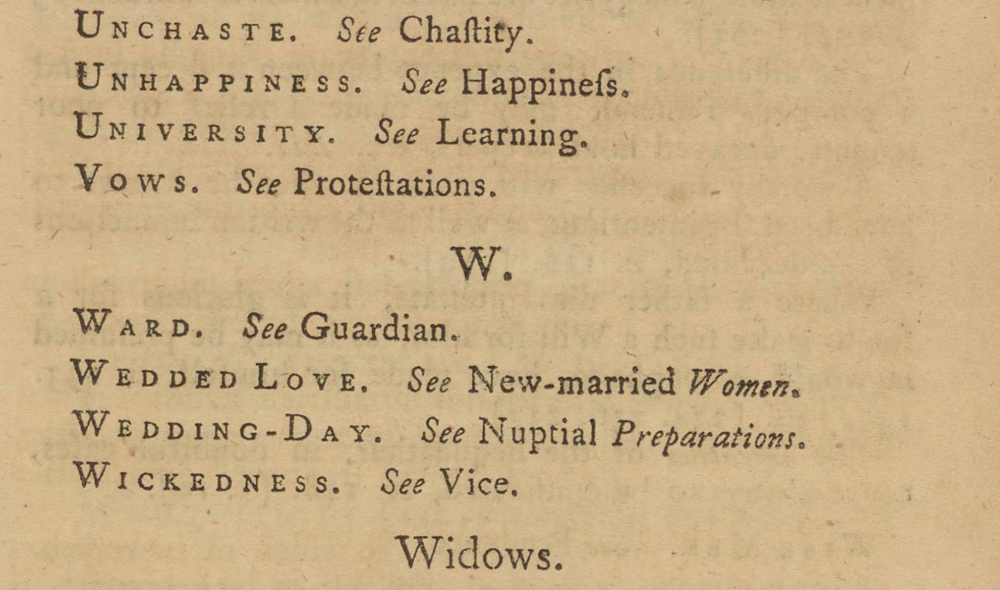

In line with Johnson's Dictionary and other reference works, Richardson includes internal references within his work, guiding the reader to turn to other pages. In doing so, Richardson creates an elaborate network — not only externally, connecting to the three novels, but also internally, between subject sections.
On this page, we see that Richardson added additional headings that only exist to redirect readers to other headings. For example, a reader who turns to "W" to read about "Wickedness" is redirected to "Vice."
From this, we can assume that Richardson expected his readers to dip in and out of the book, rather than read from beginning to end.
Perhaps to a greater extend than they aid the reader, these heading redirections give the reader a sense of an intertwined network. Many of the suggestions are quite redundant: the text suggests, for example, that for “unhappiness” a reader should refer to “happiness”. This suggests that the excessive cross-references might have been included not only to ease the reading experience, but, in many cases, in order to facilitate an understanding of the book as a complex interconnected system, while imitating the authority of a reference work.
While the Clarissa section has none of these stand-alone cross references, the Pamela section has 15 and the Grandison section 82. In the Grandison collection, they clutter the page; under ‘V’ and ‘W’, for example, eight are inserted consecutively.
{Return to Tour Table of Contents}